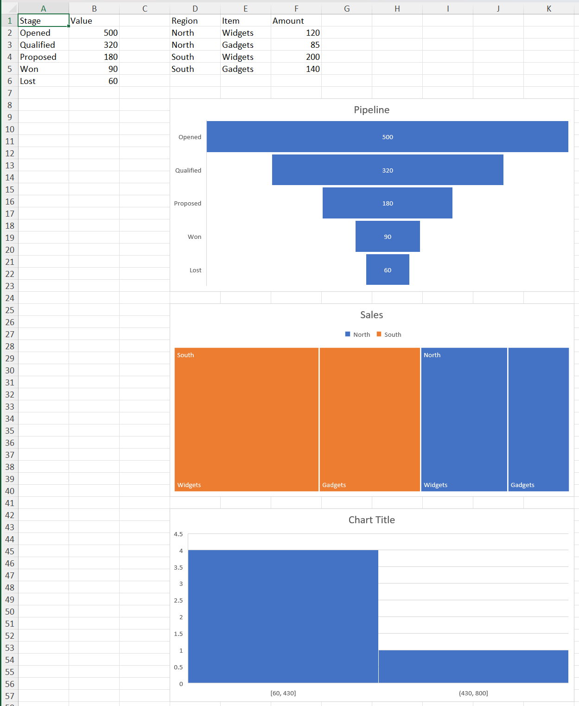

Handling of native Excel charts in XLSX.jl is experimental and a work in progress. All aspects may be subject to change. Feedback is welcome!
Creating chartEx charts
julia> using XLSX, XLSX.ChartsThe newer chart kinds live in Microsoft's cx: namespace and are created with addChartEx: :waterfall, :funnel, :treemap, :sunburst, :histogram, :pareto and :boxWhisker. Reading them is covered in Reading charts, and the c: kinds in Creating charts.
Data comes first
A cx: chart part must contain data — the schema gives it no valid empty form — so addChartEx takes the first series' values along with the kind:
julia> f = XLSX.newxlsx();
julia> ws = f[1];
julia> ws["A1"] = "Stage"; ws["B1"] = "Value";
julia> ws["A2:A6"] = reshape(["Opened", "Qualified", "Proposed", "Won", "Lost"], 5, 1);
julia> ws["B2:B6"] = reshape([500.0, 320.0, 180.0, 90.0, 60.0], 5, 1);
julia> c = addChartEx(ws, :funnel, "B2:B6"; categories = "A2:A6",
anchor = "D8:K23", title = "Pipeline")
XLSX.Charts.ChartEx "chartEx1" on sheet "Sheet1" at D8:K23
title: "Pipeline"
type: funnel
layouts: funnel
series: 1
refs: Sheet1!$A$2:$A$6, Sheet1!$B$2:$B$6
That is the difference from addChart, which creates an empty chart for addSeries to fill.
anchor, title, name, name_ref and the reference forms are all as they are for the c: kinds. Passing the file rather than a worksheet creates a chartsheet, with sheetname in place of anchor.
What each layout needs
categories means different things by layout, and the rules are enforced:
| Layout | Categories | Series |
|---|---|---|
:waterfall | optional | one |
:funnel | optional | one |
:treemap | required, one column per hierarchy level | one |
:sunburst | required, one column per hierarchy level | one |
:histogram | none — Excel bins the values itself | one |
:pareto | optional | one |
:boxWhisker | optional | several |
A treemap or sunburst takes its hierarchy from adjacent columns, outermost first, passed as one range:
julia> ws["D1"] = "Region"; ws["E1"] = "Item"; ws["F1"] = "Amount";
julia> ws["D2:D5"] = reshape(["North", "North", "South", "South"], 4, 1);
julia> ws["E2:E5"] = reshape(["Widgets", "Gadgets", "Widgets", "Gadgets"], 4, 1);
julia> ws["F2:F5"] = reshape([120.0, 85.0, 200.0, 140.0], 4, 1);
julia> tm = addChartEx(ws, :treemap, "F2:F5"; categories = "D2:E5",
anchor = "D25:K40", title = "Sales")
XLSX.Charts.ChartEx "chartEx2" on sheet "Sheet1" at D25:K40
title: "Sales"
type: treemap
layouts: treemap
series: 1
refs: Sheet1!$D$2:$E$5, Sheet1!$F$2:$F$5A histogram takes no category at all, since Excel works out the bins from the values:
julia> h = addChartEx(ws, :histogram, "B2:B6"; anchor = "D42:K57")
XLSX.Charts.ChartEx "chartEx3" on sheet "Sheet1" at D42:K57
type: histogram
layouts: clusteredColumn
series: 1
refs: Sheet1!$B$2:$B$6Binning is a property of the series rather than of the data — see getSeriesBinning and setSeriesBinning.

Pareto charts
Excel draws a Pareto chart as columns plus a line of cumulative percentages it calculates from them. The line has no data of its own, so, as in Excel's Select Data dialog, a Pareto chart has one series. The line is reached through that series with pareto = true, on any function that describes or formats a series:
julia> p = addChartEx(ws, :pareto, "F2:F5"; categories = "D2:D5", anchor = "H20:N34");
julia> getChartSeriesCount(p)
1
julia> getSeriesLayout(p, 1), getSeriesLayout(p, 1; pareto = true)
(:clusteredColumn, :paretoLine)
julia> setSeriesLineColor(p, 1, "C00000"; pareto = true); # the line, not the columnsLayout properties such as binning belong to the columns, and take no pareto keyword.
Box and whisker: several series
:boxWhisker is the one layout that takes more than one series, added with addSeries as for a c: chart:
julia> f = XLSX.newxlsx();
julia> ws = f[1];
julia> ws["A1"] = "Site"; ws["B1"] = "2024"; ws["C1"] = "2025";
julia> ws["A2:A6"] = reshape(["North", "South", "East", "West", "Central"], 5, 1);
julia> ws["B2:B6"] = reshape([12.0, 18.0, 9.0, 21.0, 15.0], 5, 1);
julia> ws["C2:C6"] = reshape([14.0, 16.0, 11.0, 19.0, 17.0], 5, 1);
julia> bw = addChartEx(ws, :boxWhisker, "B2:B6"; categories = "A2:A6",
anchor = "E2:L17", title = "Spread by site",
name_ref = "B1");
julia> addSeries(bw, "C2:C6"; categories = "A2:A6", name_ref = "C1");
julia> getChartSeriesCount(bw)
2The two series share their categories, as Excel writes them. addSeries on a ChartEx takes categories, name and name_ref only — the formatting keywords of the c: form don't apply.
No caches
A cx: chart carries references but no cached values: Excel writes none, and neither does XLSX.jl. So a chart created this way shows nothing until Excel opens the file and computes it, and getChartData throws for a ChartEx.
Excel writes a cx: chart's references indirectly, through hidden defined names of the form _xlchart.v1.0. XLSX.jl writes the range itself in cx:f; Excel reads that, and replaces it with its own names the next time it saves the file. getChartRanges resolves either form to a range.
Appearance
A created cx: chart gets Excel's own style for that layout. Most of a cx: chart's appearance lives in its style part rather than in the chart part, and that part is not read into the cascade — so formatting a cx: chart from code reaches less than it does for a c: chart. See Limitations.
Region maps cannot be created: Excel resolves their geography through an online service, and the package has no template for one. They are read like any other ChartEx, and preserved when the file is written.